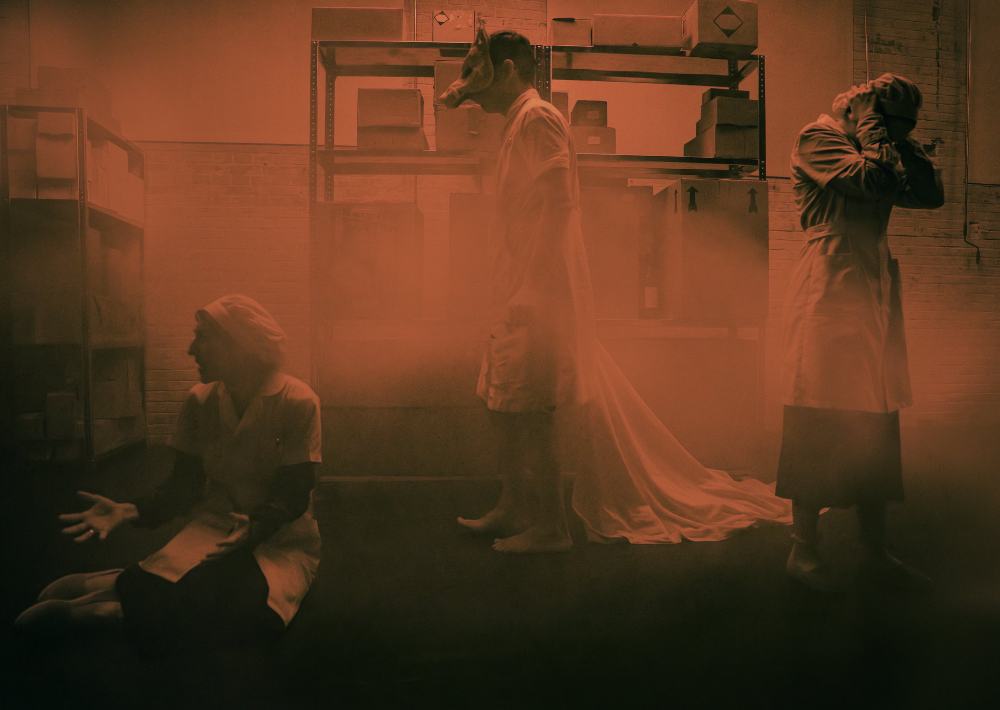
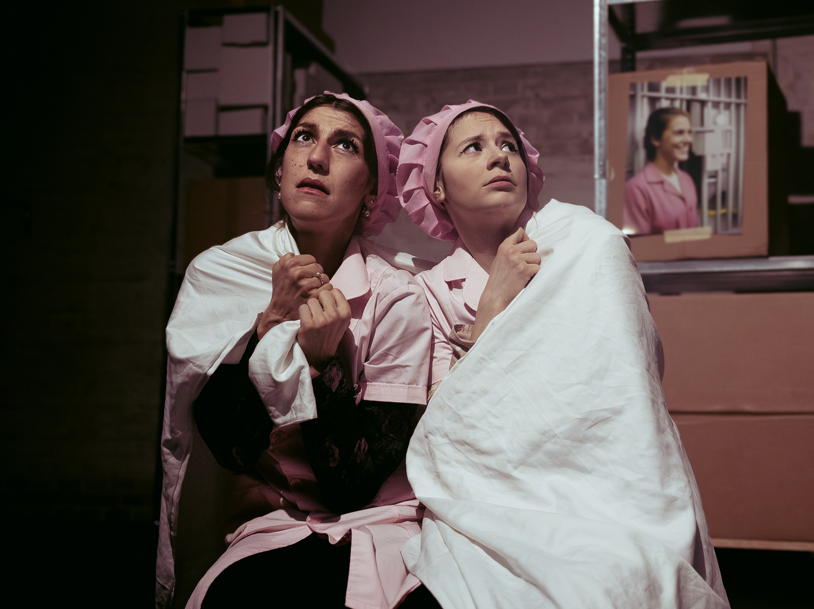
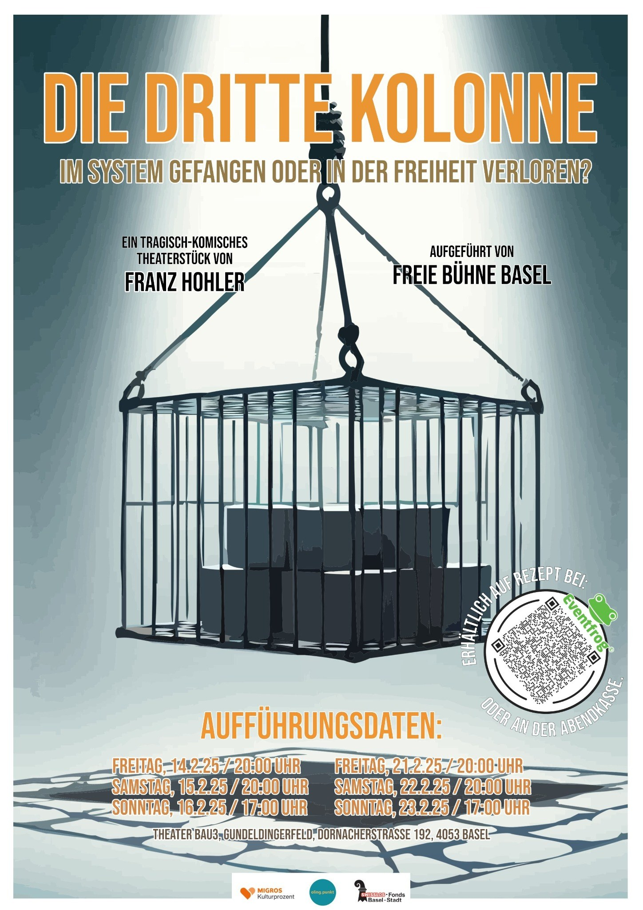
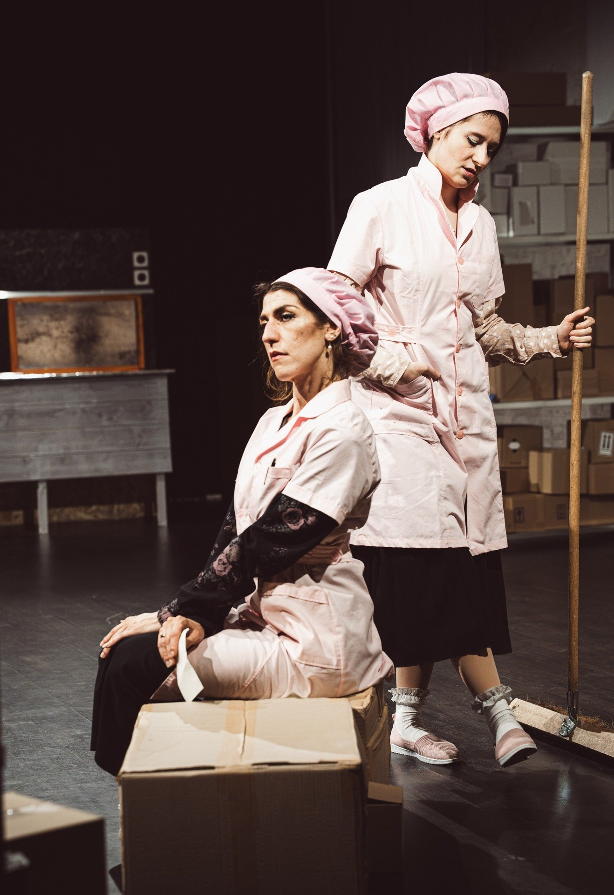

Die Dritte Kolonne
2025 präsentierte die Freie Bühne Basel im Theater Bau 3 Basel an zwei Wochenenden das Stück «Die Dritte Kolonne» von Franz Hohler. Dieser schrieb dieses skurrile, tragisch-komische Stück bereits 1979, doch der Inhalt ist heute aktueller denn je.
Das Drama gewährt Einblick in den Arbeitsalltag zweier Frauen, welche als Arbeitskolleginnen in einem Medikamentenumschlag tätig sind. Wir sehen ihre Bewältigungsstrategien im Umgang mit der eigenen mentalen Gesundheit, welche sich in zwei Extreme entwickeln: Die der völligen Anpassung und die des Ausbrechens.
Es ist leicht zu beobachten, dass obwohl in unserer heutigen Gesellschaft die psychische Gesundheit der Menschen immer breiter thematisiert wird, sie sich beim einzelnen Menschen aber nach wie vor verschlechtert. Diese Tatsache zu beleuchten ist eines der Ziele der Freien Bühne Basel.
Gleichzeitig erlaubt die feine sarkastische Feder eines Franz Hohler in einer klassisch-absurden Umsetzung der Materie dem Zuschauer ausreichend Reflexionsraum, um auch herzhaft über die Komik des Werkes zu lachen.
Besetzung
Die Ältere: Anja Schlegel
Die Jüngere: Carolin Pfäffli
Die Gegensprechanlage: Silvio Bruder
Team
Regie: Jasmin Wenger
Produktionsleitung: Benjamin Zimber



